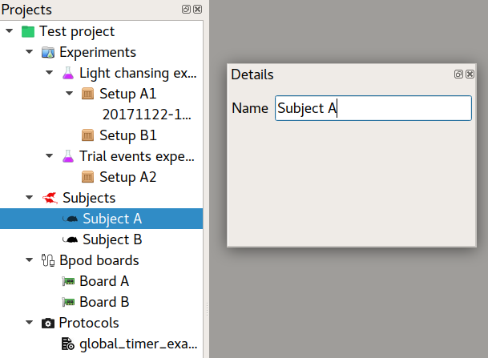
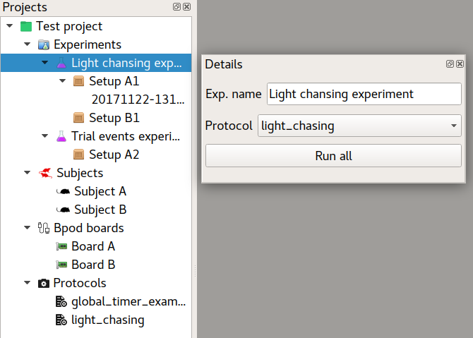
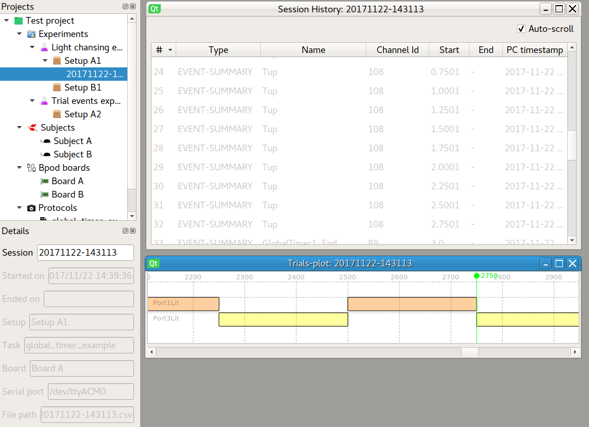

Basic usage¶
Projects¶
When you open the Bpod GUI for the first time, you can create a new project or load a previous project from your filesystem.

With PyBpod GUI you can easily organize your work. Projects allow you to aggregate several experiments in one place. Moreover, you can have several projects open at the same time to compare data. Each project has a set of experiments, boxes and protocols.

Bpod boards¶
PyBpod GUI supports multiple Bpod boards to be run in parallel. Just add a new board, select serial port, run your experiment and open the console window.

The console window allows you to see real time output from the Bpod.

Note
On the Board details window you can activate or deactivate ports by checking or unchecking them in the ports list.
Subjects¶
The subjects allow you to manage the animals being used in your experiments. By keeping the list of animals updated you will be able to better control the usage of them, and later you will be able to use this information to do statistics about the different animals reponses to your experiment.
{kind=link}
Protocols¶
Protocols allow you to define how the state matrix works. They are fully written in Python but follow a similar syntax from the Bpod Matlab equivalents.
PyBpod GUI ships with a code editor with syntax highlight and you don’t have to hardcode the serial port or other settings. Let the GUI do the job for you and focus on your experiments!

Experiments and experimental setups¶
The experiments node hold all your experiments important data. Each experiment, runs a protocol and has a list of experimental setups (you can also call it arenas), where one or more subjects can be placed to run execute the selected protocol. From each setup you should associate a corresponding Bpod board that will be responsibile for running your protocol.
The workflow goes like this:

- Inside the project, add an experiment.
- Assign a protocol to the experiment.
- Inside the experiment, add several setups.
- Assign a Bpod board to each of the setups.
- Assign one or more subjects to each setup.
- Run the experiment for one setup or run them all at the same time!
{kind=link}

Sessions¶
Each time you run a Bpod protocol on a setup a new session is created. The GUI collects the output from the PyBpod API and processes these events on a list (which we call session history). Besides being on memory, this history is automatically saved on a text file, so you never lose Bpod data.
If you navigate to your project on the filesystem, and locate the desired setp, you should find several files:
- CSV and JSON are default outputs from the pybpod-api (for example, you can open CSV on excel and quickly produce some plots)
- Plain text file is the output from the GUI

You can also develop plugins that enhance session data visualization and access them by right-clicking the desired session.
{kind=link}
GUI User settings¶
You can edit user settings directly from the GUI. User settings enable you to tweak the GUI the way you like it. Example of parameters you may change are:
- Loaded plugins
- Default project path
- Refresh time for console window
- And much more…